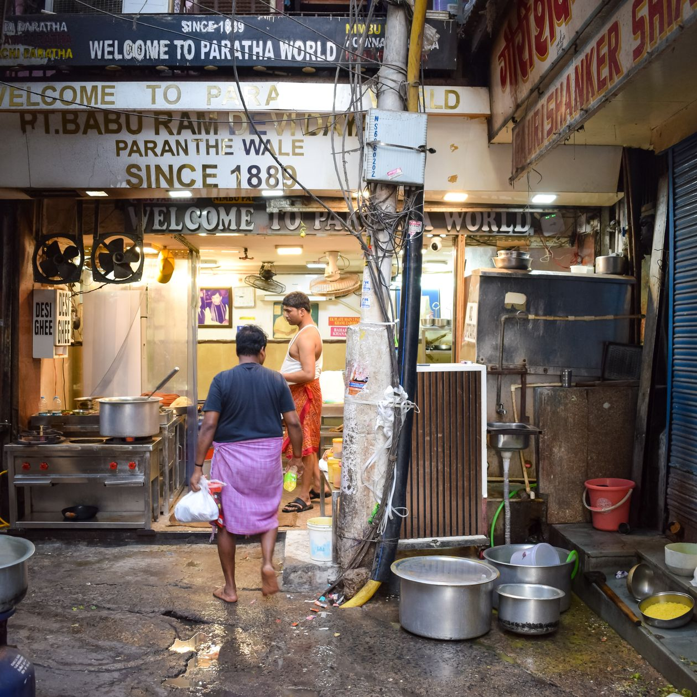

Story 01 · The event
Four hundred plates at a sangeet
The ask: a wedding sangeet on Ujjain Road, 400 guests expected over one evening, chaat as the first food of the night — served before the dancing, to people in wedding clothes, with no queue longer than a song.
What we did. The Full Board, run as two stations. The pani puri station stood apart from the main counter, because puris are eaten standing, one at a time, and a puri queue blocks everything behind it. Chutneys were batched that morning in the prep kitchen — 18 litres of imli, 12 of pudina — and tasted against the reference jars before they left. Tikkis were fried on two tawas in batches of forty, never ahead of the tickets: a tikki that waits is a tikki wasted. Three people on assembly, one on frying, one on water and washing. Every ticket asked the heat level out loud, the way the stall does.
The outcome. 412 covers served between 7:15 and 10:40 pm. The longest anyone waited, by the host's own count, was under four minutes. Not one plate came back for heat — too much or too little — because the level was agreed before the plate was built, not discovered after.
“I booked a chaat counter and worried about the queue all month. There wasn't one. My mother-in-law, who does not praise caterers, asked who had done the pani puri.”
- Format
- The Full Board, 2 stations
- When
- February 2026
- Covers
- 412 served
- Chutneys batched
- Imli 18 L · Pudina 12 L
- Team
- 5 on the counter
- Plates returned
- 0
